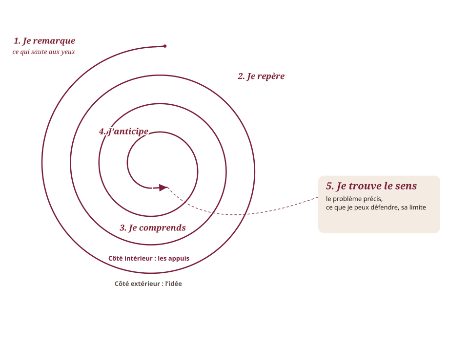
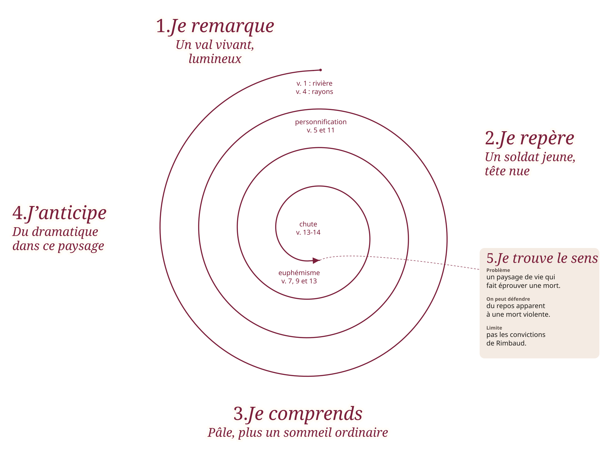

Animation pédagogique
Tomber amoureux
de l’étude
Six méthodes pour que le travail en solo cesse d’être une corvée. Moins de relecture passive. Plus de geste, de rappel, de plaisir de comprendre. La spirale de Gorse, conçue par Madame Carole Paoli Pompougnac, s’y ajoute pour le travail du texte.
- 01 Pomodoro
- 02 Cornell
- 03 Rappel actif
- 04 Feynman
- 05 Répétition
- 06 Carte mentale
- 07 Spirale de Gorse
Inspiré du reel @afstudy.diary · méthodes éprouvées, à pratiquer tout de suite.
00 Pour animer
Une séance d’environ 50 minutes
Cette page se projette. Chaque station se fait en vrai, pas seulement en commentaire. Le minuteur a un format atelier de 5 minutes pour la salle, et le 25 minutes pour le travail réel.
-
Accroche
Demander : « À quand remonte la dernière fois où étudier t’a fait du bien ? » Deux ou trois réponses, sans corriger.
-
Pourquoi ces méthodes
Nommer le basculement : relire use, récupérer attache. On ne collectionne pas les techniques, on en choisit une.
-
Pomodoro atelier
Une seule tâche. Cinq minutes de silence. Une minute pour dire ce qui a résisté au démarrage.
-
Cornell
Sur ce qui vient d’être travaillé : notes, questions dans la marge, résumé de deux phrases.
-
Rappel actif
On ferme tout. On écrit de mémoire. On rouvre. On entoure le trou, pas la page entière.
-
Feynman en binôme
Expliquer comme à un élève de 12 ans. L’autre note le seul mot qui a coincé.
-
Sortie
Chacun garde une méthode et note la date de la prochaine révision. La progression visible fait revenir.
La spirale de Gorse n’entre pas dans ce timing de 50 minutes. On l’utilise dès qu’un texte, une image ou un sujet doit être approfondi.
01 Pourquoi ces méthodes
Quand étudier devient un plaisir
Ces six gestes transforment l’étude passive en pratique active. Ils réduisent la frustration, augmentent la rétention et créent un sentiment de progression. L’étude devient addictive, dans le bon sens du terme. La spirale de Gorse, conçue par Madame Carole Paoli Pompougnac, s’y ajoute pour le travail d’un texte ou d’un sujet.
- Pomodoro et Cornell apparaissent dans les commentaires du reel.
- Les autres sont les piliers d’un apprentissage qui dure : rappeler, expliquer, espacer, relier.
- Ensemble, elles aident à « tomber amoureux » de l’étude. Une ou deux suffisent pour commencer.
- La spirale de Gorse n’est pas tirée du reel : c’est une méthode de Madame Carole Paoli Pompougnac, pour approfondir un texte jusqu’à une question précise.
02 Technique Pomodoro
Focus en sprints de 25 minutes
- Choisis une seule tâche.
- Travaille sans interruption.
- Pause courte.
- Après 4 cycles : pause longue, 15 à 30 minutes (ici, 20).
Ça marche parce que le coût de démarrage baisse. La concentration tient. L’épuisement recule. L’étude redevient un morceau, pas une montagne.
Focus
Aucun focus terminé
03 Méthode Cornell
Des notes qui s’étudient toutes seules
La page se coupe en trois. À droite, ou dans la grande zone : ce que tu entends. À gauche, après coup : les questions et les mots-clés. En bas : un résumé court. Pour réviser, on cache les notes et on répond aux questions. Idéale pour qui veut des notes utiles sans les recopier trois fois.
04 Rappel actif
Récupérer plutôt que relire
Après avoir lu ou écouté, le geste n’est pas de rouvrir. C’est de fermer. L’effort de récupération est ce qui renforce la mémoire. La relecture donne l’illusion de savoir.
05 Technique Feynman
Explique-le simplement
Si tu ne peux pas l’expliquer simplement, tu ne l’as pas vraiment compris.
Choisis un concept. Dis-le comme à un élève de 12 ans, à voix haute ou ici. Le point où la phrase se casse est le point à retravailler. Reviens à la source, simplifie, recommence. La compréhension profonde est aussi une satisfaction.
- Choisis un concept.
- Explique-le comme à un enfant de 12 ans.
- Repère le moment exact où tu bloques.
- Reviens à la source, simplifie, répète.
06 Répétition espacée et carte mentale
Ne pas oublier, et voir les liens
La répétition espacée consiste à revoir à intervalles croissants : 1 jour, 3 jours, 1 semaine, 1 mois. Chaque retour combat la courbe de l’oubli au moment où le souvenir vacille, pas quand il est encore tout frais.
- Juste après
- Sans retour
- Rappel J+1
- Puis J+30
La carte mentale met le chapitre au centre et les idées autour. Elle sert à voir les relations, pas à décorer une page. Quatre branches suffisent pour commencer.
07 Spirale de Gorse
Partir de ce qui saute aux yeux
Méthode conçue par Madame Carole Paoli Pompougnac. Le nom rend hommage à la grand-mère de son mari. On part toujours de ce qui saute aux yeux, puis chaque tour s’enfonce vers ce qui est moins visible, prise après prise, jusqu’à « Je trouve le sens » : le problème précis, ce que l’on peut défendre, et sa limite.

- 1
Je remarque. Ce qui saute aux yeux : la première impression, ce qui paraît évident.
- 2
Je repère. Ce que je distingue plus nettement, un détail, un passage, un élément.
- 3
Je comprends. Ce que cela me permet de comprendre.
- 4
J’anticipe. Les éléments réunis, je me fie à mon intuition : percer le texte à jour, c’est anticiper sa finalité, l’idée principale.
- 5
Je trouve le sens. Formule le problème précis, ce que tu peux défendre, et sa limite.
À chaque tour, l’idée s’écrit à l’extérieur, et à l’intérieur ce qui la soutient. Si un élément résiste à ton idée, reviens en arrière et reformule. La première impression n’est pas forcément fausse : elle peut être précisée, limitée, parfois déplacée.
Exemple
« Le Dormeur du val »
Le poème entier, puis la spirale remplie. À l’extérieur, l’idée. À l’intérieur, les numéros de vers, de courtes citations, et quelques figures de style.
« Le Dormeur du val »
Arthur Rimbaud, Poésies complètes, édition Vanier, 1895.
- 1C’est un trou de verdure où chante une rivière
- 2Accrochant follement aux herbes des haillons
- 3D’argent ; où le soleil, de la montagne fière,
- 4Luit : c’est un petit val qui mousse de rayons.
- 5Un soldat jeune, bouche ouverte, tête nue,
- 6Et la nuque baignant dans le frais cresson bleu,
- 7Dort ; il est étendu dans l’herbe, sous la nue,
- 8Pâle dans son lit vert où la lumière pleut.
- 9Les pieds dans les glaïeuls, il dort. Souriant comme
- 10Sourirait un enfant malade, il fait un somme :
- 11Nature, berce-le chaudement : il a froid.
- 12Les parfums ne font pas frissonner sa narine ;
- 13Il dort dans le soleil, la main sur sa poitrine
- 14Tranquille. Il a deux trous rouges au côté droit.

Arthur Rimbaud, « Le Dormeur du val », Poésies complètes, édition Vanier, 1895. Texte du domaine public. Courtes citations dans la spirale.
Quatre usages
-
Explication linéaire
On suit le texte. Le premier tour recueille ce qui frappe. Chaque tour suivant dit ce que le segment ajoute, avec les mots qui le montrent.
-
Commentaire
On part de l’impression dominante. Les tours suivants l’éprouvent, jusqu’à un projet de lecture et ses limites.
-
Dissertation et essai
On ancre le sujet dans une première lecture accessible, puis on éprouve, on déplace, et l’on marque ce que l’on peut défendre.
-
Oral
On part d’une rencontre de lecture. Les tours préparent le propos et l’entretien : ce que l’on affirme, ce que l’on ne peut pas encore dire.
Si on vous demande ce que c’est
La spirale de Gorse, c’est une manière de travailler un texte ou un sujet en y revenant plusieurs fois, de plus en plus précisément, jusqu’à « Je trouve le sens » : le problème précis, ce que l’on peut défendre, et sa limite. On part de ce qui saute aux yeux. À chaque tour, on écrit l’idée à l’extérieur, et à l’intérieur les vers, les lignes ou les arguments qui la soutiennent. C’est une forme d’escalade : chaque tour est une prise plus haute, on ne grimpe que si l’appui du bord intérieur tient, et « Je trouve le sens » est le sommet d’où l’on voit l’essentiel.
Un rapprochement limité est possible avec le curriculum en spirale de Jerome Bruner : revenir n’est pas répéter à l’identique. La spirale de Gorse n’en est pas une application, et aucune validation expérimentale n’est affirmée ici.
08 Les combiner
Une séance, pas six devoirs
Pomodoro structure le temps. Cornell prend les notes. Le rappel actif et Feynman occupent la révision. La répétition espacée décide quand revenir. La carte mentale synthétise un chapitre. La spirale de Gorse sert dès qu’un texte demande à être approfondi. Commence par une ou deux. La progression visible crée la motivation.